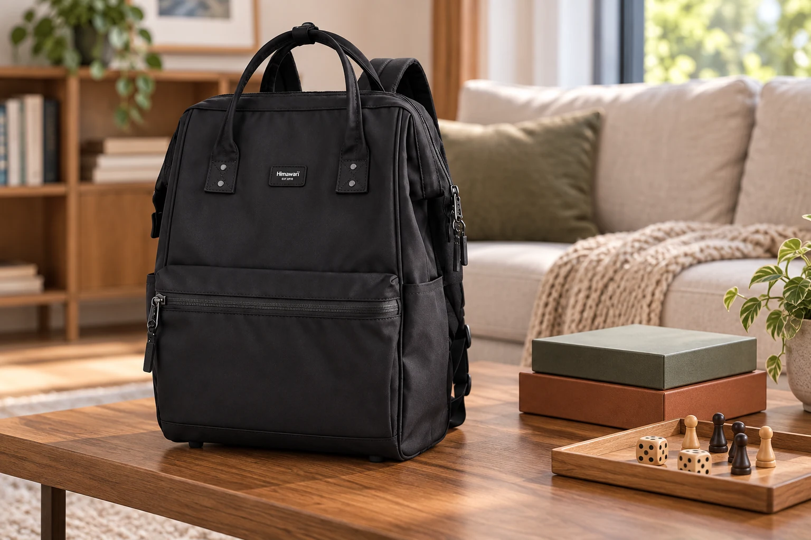

작은 보드게임을 백팩에 담을 때: 상자보다 구성품부터

친구 집에 작은 게임 하나를 가져갈 때는 상자만 닫으면 준비가 끝난 것처럼 느껴집니다. 그런데 이동 중 상자가 기울면 안의 카드와 작은 말이 섞일 수 있고, 돌아올 때는 하나가 빠져도 알아차리기 어렵습니다. 게임을 고르는 단계부터 되담는 순간까지, 구성품이 한 묶음으로 움직이도록 준비해보세요.
카드만 있는 게임: 케이스 안의 빈틈 확인
카드는 게임에서 제공한 보관함이나 크기에 맞는 케이스에 넣습니다. 보호 슬리브를 씌웠다면 전체 두께가 늘어나므로 뚜껑을 눌러 닫지 않아야 합니다. 고무줄을 카드에 직접 세게 감기보다 케이스가 자연스럽게 닫히는지 확인하세요. 사용 설명서나 점수표도 빠뜨리지 않게 함께 준비하되, 작은 카드 사이에 접어 끼워 모서리를 누르지 않는 자리를 정합니다.
말과 주사위가 있는 게임: 안쪽에서 한 번 더 나누기
게임의 원래 트레이나 작은 보관 주머니를 활용해 부품이 상자 안에서 돌아다니지 않게 합니다. 종류별로 묶어두면 꺼내 놓을 때도 순서가 단순해집니다. 부품 수가 많다면 설명서의 구성표를 출발 전에 확인해보세요. 무엇이 원래 있었는지 모르면 모임 후 확인도 어려워집니다. 별도 봉투는 잘 닫히고 내용물이 빠져나올 틈이 없는 것으로 준비합니다.
상자째 담는 게임: 뚜껑을 누르지 않는 자리
상자를 백팩에 세워 넣어야 한다면 먼저 상자의 닫힘과 내부 배치를 확인합니다. 넓은 상자를 구부리거나 모서리를 밀어 가방 폭에 맞추지 마세요. 단단한 충전기나 물병이 상자 한쪽을 누르는 위치도 피합니다. 원래 포장을 바꾸면 구성품을 정리하기 어려운 게임은 작은 가방에 맞추려고 해체하기보다 별도 운반 방법을 마련하는 편이 낫습니다. No.1884L도 본인의 상자 크기와 내부 수납 정보를 대조해야 합니다.
모임이 끝날 때: 상자를 닫기 전에 한 번 세기
게임을 정리할 때 카드, 말, 주사위와 설명서를 처음의 묶음으로 돌려놓습니다. 먼저 테이블 위를 보고 의자와 바닥 주변도 확인한 뒤 상자를 닫으세요. 빌려 온 게임이라면 다른 사람의 게임 부품과 섞이지 않았는지도 함께 봅니다. 음료가 묻은 부품을 그대로 깨끗한 카드 사이에 넣지 말고 해당 게임의 관리 안내에 따라 처리합니다. 가방은 모든 구성품 확인이 끝난 뒤 닫는 마지막 장소로 생각하면 좋습니다.
다음 모임을 위한 짧은 기록
돌아와서는 실제로 하지 않은 게임과 필요한데 없었던 준비물을 구분해둡니다. 예를 들어 게임 두 개를 가져갔지만 하나만 했다면 다음에는 한 개부터 준비할 수 있습니다. 점수 기록에 쓴 펜이 필요했다면 게임 상자 밖의 필통에 자리를 정합니다. 여러 게임의 부품을 한 봉투에 합쳐 부피를 줄이기보다 각 게임이 완결된 묶음으로 남도록 하는 편이 다음 준비에 도움이 됩니다.
참고·안내
- Himawari No.1884L 제품 정보
- 실제 Himawari 제품 원본을 참조해 새로 만든 AI 연출 이미지입니다. 주변 소품은 상품에 포함되지 않으며 수납 용량을 보장하는 장면은 아닙니다.
자주 묻는 질문
상자가 크면 내용물만 꺼내 가져가도 될까요?
구성품을 보호하고 빠짐없이 회수할 수 있는지 먼저 확인하세요. 원래 트레이가 필요한 게임은 포장을 유지하고 다른 운반 방법을 고려합니다.
1884L이면 보드게임 상자가 다 들어가나요?
아닙니다. 상자의 실제 가로·세로·두께와 가방 입구, 함께 넣을 짐을 확인해야 합니다.